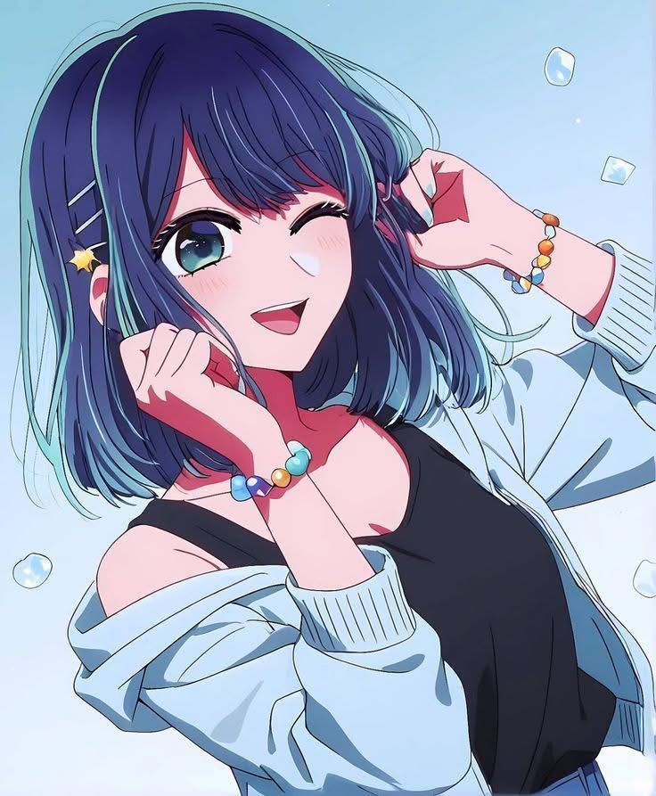

Her ability to reconstruct a character from tiny behavioral details feels less like imitation and more like a form of radical attention.
SCENE
02
ROLLING
02
ROLLING
CHARACTER FILE / 01
THE PERFORMER
A personal record of the precision, empathy, and quiet intensity that make Akane unforgettable.

- NAME
- Kurokawa Akane
- CRAFT
- Method acting / character study
- ATMOSPHERE
- Cool lights, quiet rooms, a mind always working.
- PERSONAL NOTE
- The kind of presence that makes observation feel like a superpower.
DIRECTOR'S CUT / 02
SCENES THAT STAY
A living index for moments, expressions, and performances that deserve another look.
01 THE BREAKTHROUGH EXPAND
01
MEMORY / 01
That first performance where Akane's ability to read a character becomes impossible to ignore.
02 THE RESEARCH EXPAND
02
STUDY / 02
The small gesture, borrowed rhythm, or quiet observation that makes the whole performance feel lived in.
03 THE STAGE LIGHT EXPAND
03
GLARE / 03
The performance that makes the room feel larger than the story, even after the scene has ended.
CONTACT SHEET / 03
GALLERY
Portraits, frames, edits, and visual studies collected like a contact sheet.
SELECTED CONTACT SHEET / 04
FAVORITE FRAMES
The images that hold the archive together. A smaller room for the frames that matter most.
PRIVATE NOTEBOOK / 04
WHY AKANE?
The contrast between her private uncertainty and the precision she brings to a stage is where the emotional charge lives.
PERSONAL ARCHIVE / WRITTEN IN THE BLUE HOUR
AMBIENT REEL / 06
HAVEN
SOUNDTRACK
AKANE HAVEN //
MEPHISTO
QUEEN BEE / LOCAL REEL
MEDIA DESK / 05
MEDIA
YOUTUBE
PERFORMANCE REFERENCE
SPOTIFY
TRACK REFERENCE